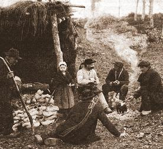
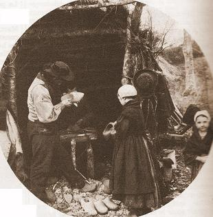

Le Faucon
The Hawk
Dialecte de Cornouaille
|
"On chante encore dans les Montagnes Noires une chanson guerrière sur ces événements ; j’en dois une version à un sabotier de Coat Skiriou, nommé Brangolo ." Dans l'édition de 1867, il précise: "Je l'ai entendu pour la première fois siffler à un jeune bouvier qui menait son bœuf au boucher. L'air, me dit-il, est celui de la circonstance, et on ne peut l'entendre sans pleurer." F. Gourvil (p.355) remarque que les lieux-dits comportant le mot "Skirioù" sont tous situés loin des Montagnes Noires et que le patronyme "Brangolo" étant vannetais, il est impossible d'identifier le sabotier en question. D. Laurent a, cependant, repéré le lieu-dit à Quéménéven, sur les contreforts des Montagnes Noires (il s'agit, en fait du Squirriou de Berrien, cf. Marquis de Rivière ). Il existe dans les carnets 2 autres chants dictés par le même Brangolo. Selon Luzel et Joseph Loth, cités (P. 389 de son "La Villemarqué") par Francis Gourvil qui se range à leur avis, ce chant historique ferait partie de la catégorie des chants inventés . M. Donatien Laurent estime, au contraire, qu'il s'agit d'un authentique chant épique populaire à peine remanié par son collecteur. |
"In the 'Montagnes Noires' a war song is still sung about these events: I learnt the present version from the singing of a clog maker named Brangolo, living at Coat Skiriou . In the 1867 edition he specifies: "I heard the tune first whistled by a young cattleman who was leading his ox to the slaughterer. The tune, he said, matches the circumstances. No one can hear it and not cry." F. Gourvil (p.235) remarks that the place-names including the element "Skirioù" are, all of them, far away from the Black Mountains and that the name "Brangolo" being of originated from the Vannes area, it is impossible to identify the clog maker known by this name. However, D. Laurent was able to locate this place-name in the parish Quéménéven, on the outskirts of the Montagnes Noires (but he is wrong: it ought to be Squirriou near Berrien, see. Marquis de Rivière ). In the Keransquer copybooks there are two other songs dictated by the same Brangolo. Selon Luzel et Joseph Loth, cités (P. 389 de son "La Villemarqué") par Francis Gourvil qui se range à leur avis, ce chant historique ferait partie de la catégorie des chants inventés . M. Donatien Laurent considers it on the contrary as a genuine folk epic song, hardly reshaped by its collector. |
Ton
Mode locrien - dominante: la
Dans l'original, le tempo est "andante", avec alternance 12/8 et 9/8 (mesures 3 et 5)

| Français | English |
|---|---|
|
Un faucon étrangle une poule, La fermière a tué le seigneur. Voilà qu'on opprime la foule, Cette bête muette de peur. Voilà qu'on opprime la foule, Cette bête muette de peur. 2. Le peuple accablé de souffrance Par l'envahisseur étranger, L'envahisseur venu de France, Que la Douairière a racolé. 3. Alors la rébellion éclate Parmi les jeunes et les vieux: Une poule, un oiseau de chasse Ont en Bretagne mis le feu. 4. Sur le Menez-Du, le farouche Feu réunit pour la Saint-Jean, Belliqueux, armés de leurs fourches, Kado et trente paysans, 5. - Dites-moi, mangeurs de bouillie, Payerez-vous donc ces droits indus? Je ne les payerai, de ma vie! J'aimerais mieux être pendu! 6. - Ni moi non plus, ça je le jure, Par mes fils nus, et mes troupeaux Si maigres; par ce feu qui brûle, Par Saint Jean et par Saint Kado 7. - Ni moi qui vois mes biens se perdre: Je serais tout à fait ruiné; Avant que l'année ne s'achève, Il me faudrait mon pain mendier! 8. - Qu'à ma suite chacun s'en aille! Qui parle de mendier son pain? S'il veulent tumulte et bataille, Ils en auront et dès demain, 9. - Jurons-le par ce ciel sans voile! Avant le jour ils en auront! Par la lune et par les étoiles! Par la terre et l'éclair, jurons! 10. - Et Kado de prendre une brande, Et chacun de prendre un tison: Allons-nous en! Sus à Guérande!- - En route, les enfants, allons! 11. A ses côtés, allait sa femme Portant sur l'épaule un grappin. En marchant, la troupe elle enflamme : - Pressons, enfants, allons bon train!- 12. Ce n'est pas pour un sort immonde Ni pour qu'ils portent des fagots, Que j'ai mis trente fils au monde; Ni pour qu'ils ploient sous les fardeaux! 13. Ni pour porter de lourdes pierres Que leur mère les enfanta; Ni, pendant des journées entières, Piler l'ajonc nain sous leurs pas! 14. Ni pour donner leur nourriture A des chevaux et des faucons. Mais pour tuer ceux qui nous pressurent Que j'enfantais tous mes garçons!- 15. Et ils allaient d'un feu à l'autre En suivant la route en lacets: - Venez, venez, soyez des nôtres! Au feu le fisc et ses valets!- 16. En redescendant dans la plaine, Ils étaient bien trois mille et cent; La route à Langoad les mène: Ils sont neuf mille en arrivant. 17. Quand ils arrivent à Guérande, Ils sont trente mille trois cents. Voilà que Kado les harangue: - C'est ici, dit-il, maintenant!- 18. Sa voix ne s'était pas calmée, Que trois cents charretées d'ajonc Près du fort étaient empilées, Et que montait un feu brûlant! 19. Si brûlante était la fournaise Que les fourches de fer fondaient, Que les os craquaient, rouges braises, Comme en enfer ceux des damnés! 20. Tels des loups qui se sont faits prendre Ils hurlent de rage en la nuit, Les gens du fisc, réduits en cendre, Au matin lorsque l'aube luit. Trad. Ch. Souchon (c) 2008 |
As her hen was by his hawk strangled, A countrywoman killed a count. The count being killed, the folks were plagued, With taxes, for this to atone. The count being killed, the folks were plagued, With taxes, for this to atone. 2. Folks and land were trodden all over By the invaders from abroad, From France, called by the Duchess - Dowager, A heifer mooing for the ox. 3. In the grieved land broke out a rising, Young and old were with wrath inspired. For a hen and a hawk that were killed, Brittany was all set on fire! 4. Atop the Black Mount, on Saint John's eve Thirty men gathered round a fire, Among them was, on his fork leaning, Kado the Fighter, full of ire. 5. - What do you say, you, porridge eaters, Do you agree to pay the tax? For me, I shall pay none whatever! I shall be hanged if I do that! 6. - O I shall not pay the tax either! My cattle starves, bare go my sons. That by this glowing fire I do swear, And by Saint Kado and Saint John! 7. - A ha' penny I do not have to spend, I lost my chattels and all goods; Before this year has come to an end, I'll have to go and beg for food! 8. - You are not going to beg for feed, Just follow me now every one! If it is trouble and fight they need, Before sunrise they shall have some! 9. - Before sunrise, much trouble and fray! We swear it by the sea afar! We swear it by earth and by heaven, We swear it by moon and all stars! 10. - And Kado grasped a glowing brand, And everybody did the same: - Let's go, friends, let's go to Guérande! Let's go fast and quick in God's name! - 11. His wife strode with him in the van, With, on her right shoulder, a hook And as she was walking she sang: - Hurry up, come on, faster, look! - 12. Neither to let them beg for food, Did I give birth to thirty sons. Not to force them to carry wood, Nor to carry big quarry stones, 13. Nor other burdens of the sort By their poor mother were they borne ; Nor to crush and pound the green gorse, On which their bare feet must be torn! 14. T' was not to rear their pig and sow, Horses, hunt hounds or birds of prey; T' was to kill our oppressive foe, That my dear sons were borne by me! - 15. And from fire to fire they went on All along the mountain chain: - Bood! Bood! Yoo! Yoo!, quick, come along! Let us burn all accursed taxmen! - 16. When they went down the mountain there were Three thousand and a hundred of them; And of them when in Langoat they came, There were over nine thousand men. 17. When they arrived in Guérande, Kado had an immense army: Three hundred and thirty thousand! - Friends, here we are, courage! - quoth he. 18. But he had not yet finished his speech When three hundred cart-loads of gorse Around the fort were brought and heaped, And blazing flames shrouded the fort! 19. Flames that were so hot and blazing, That iron forks in them would melt, And that you could hear bones cracking Right like those of the damned in hell! 20. Like wolves that fell into the pit Did they yell with rage in the night, To ashes were turned the next morning All accursed taxmen at sunrise. Transl. Ch. Souchon (c) 2008 |
Vers les textes bretons
To the Breton texts

|
La Villemarqué
expose dans l'"argument" du chant qu'en
1008
, le
Duc Geoffroi Ier
revenait de pèlerinage. Le faucon qu'il portait au poing s'étant abattu sur la poule d'une pauvre paysanne et l'ayant étranglée, cette femme saisit une pierre et tua du même coup le faucon et son maître. La mort du duc fut le signal d'une sanglante insurrection populaire due à l'envahissement de la Bretagne par les étrangers que la duchesse douairière, veuve de Geoffroi y attira, aux vexations qu'ils exercèrent contre les paysans et à la dureté de leurs agents fiscaux.
M. Donatien Laurent , qui a découvert et étudié les carnets de collecte de La Villemarqué, indique que ce chant qui lui a été dicté vers 1840 par un sabotier de Quéménéven, raconte, en fait, le soulèvement, en juin 1490 , des paysans de Haute Cornouaille contre le vicomte de Rohan , alors commandant en chef de l'armée française en guerre contre la Duchesse Anne et qui fit également le siège de Guingamp . Le texte restitué diffère assez peu de celui publié par la Villemarqué, si ce n'est par les noms de lieu (c'est la forteresse de Rohan - "Ker a Roc'han" - dans le Morbihan qui est incendiée et non Guérande - "Keraran"- en Loire Atlantique) et, hélas, par l'abandon de termes expressifs pour des expressions banales ("ken na strinko an deiz", avant que ne jaillisse le jour, remplacé par "ken na vezo deiz", avant qu'il ne fasse jour; " gw izien ar gw irioù", les gars du fisc, remplacé par "paotred ar gwirioù", même sens mais sans l'expressive allitération; "pilañ lann kr oaz gant o zreid n oaz ", piler l'ajonc nain de leurs pieds nus, remplacé par "pilañ lann kriz", piler l'ajonc rude, ici aussi sans assonance...) Le texte manuscrit commence à la strophe 6 et se termine à la strophe 17; les strophes 9 et 14 qui contiennent des incorrections grammaticales semblent avoir été composées par La Villemarqué. En revanche, celui-ci a modifié l'ordre des strophes de façon tout à fait judicieuse: à l'origine, les strophes 11 à 13 suivaient la strophe 17. Ce manuscrit est traversé par le même souffle épique et présente la même symbolique du feu , image de la colère populaire, qui en fait une des plus belles pièces qu'ait produites la tradition populaire de Basse Bretagne. La gwerz Les jeunes hommes de Plouyé raconte une autre jacquerie. A propos des sabotiers "On chante encore dans les Montagnes noires une chanson guerrière sur ces événements ; j’en dois une version à un sabotier de Coat-Squiriou, nommé Brangolo." Cette remarque de La Villemarqué, dans l'argument de l'édition de 1845, explique largement pourquoi personne n'a recueilli un tel chant depuis La Villemarqué, non plus que les chants sur Du Guesclin, ni la plupart des magnifiques textes de 1845. C'est que les versions de ces textes se sont maintenues sur les lieux mêmes des événements qu'ils relataient, ou à proximité et que personne, à part lui, n'avaient pensé à les y chercher. C'est peut-être aussi, comme dans le cas présent, parce qu'elles n'étaient conservées qu'au sein d'un petit groupe social, à l'époque en voie de disparition comme celui des sabotiers auquel appartenait ce Brangolo.  Dans des "notes de voyage" écrites en 1842 à Canihuel, près de Corlay, et publiées dans le "Bulletin de la Société académique de Brest" en 1893 (p.240), La Villemarqué écrivait: "Je suis arrivé trop tard; il y a quarante ans, dans la forêt du Bois-Berthelot , il y avait des sabotiers, bandes organisées, qui chantaient toute l'histoire de la Bretagne en vers: la défaite des Maures par Charlemagne ou Charles Martel, le siège de Pestivien par Duguesclin , les aventures d'une dame enlevée par les Anglais assiégeant Guingamp ou Rostrenen, toute l'histoire de Merlin, etc."Le Carnet 2 , p. 227, contient le 1er jet de ce texte qui se poursuit ainsi: ...Et tous Lez-Breizh. Maintenant les bois sont coupés. les sabotiers ont disparu comme les oiseaux. Et les jeunes gens et les vieillards même vous répondent : "Dans notre enfance nos mères nous ont bercés avec tel refrain, tel chant héroïque, etc." Ces sabotiers vivaient dans la forêt où les paysans ne s'aventuraient pas à la nuit tombée. Aussi se méfiaient-ils d'eux, une méfiance qui leur été payée de retour par les "ineanenn koet" (âmes des bois). Ils vivaient avec leurs familles dans des cabanes très rudimentaires qu'évoquent les 5 chants: Leur activité était nomade et pour se nourrir, ainsi que leurs familles, ils recouraient volontiers au braconnage. La première chose que faisait le sabotier qui s'installait dans un lieu nouveau était l'achat d'une petite parcelle de forêt de hêtres. Puis il s'installait avec les siens en se construisant une petite cabane, abattant ainsi les arbres qui lui fournissaient sa matière première. Il confectionnait ensuite un four afin d'y mettre les sabots terminés. La parcelle de bois exploitée, il partait s'installer ailleurs et reprenait les mêmes activités. Quand il avait fabriqué suffisamment de sabots, il partait les vendre sur les champs de foire. Comme les chants de "mal-mariées" évoqués ci-dessus le suggèrent, les mariages entre sabotiers et paysans étaient rares. Les sabotiers se mariant entre eux étaient tous cousins et formaient une grande famille qui se réunissait lors des mariages et des funérailles. La concurrence des sabots d'Auvergne et du Limousin puis la fabrication industrielle provoquèrent le déclin de cet artisanat. (Source: "Bretagne, almanach de la mémoire et des coutumes" de Claire Tiévant, Hachette, 1981, pages:22 et 23 mars). Les chants des Montagnes Dans l'avant-propos du Barzhaz de 1845, La Villemarqué écrit ceci (page XI): C'est donc grâce à l'intervention de certains prêtres et d'amis châtelains qu'il réussit, à force de diplomatie à délier les langues des habitants réticents des secteurs écartés des Montagnes noires. L'un d'eux lui aurait même dit (p. XIII): "Maintenant je vais vous dire pourquoi il y a des chansons qu’on n’osait pas trop vous chanter; c’est que plusieurs d’entre elles ont une vertu, voyez-vous: le sang bout, la main tremble, et les fusils frémissent d’eux-mêmes, rien qu’à les entendre. Plusieurs contiennent des mots et des noms qui ont la propriété de mettre l’écume de la rage à la bouche des ennemis des chrétiens [entendez les "Bleus"], et de faire éclater leurs veines...Quand nous apprenions ces chants à nos enfants, le soir aux veillées, pour leur donner du cœur, les Bleus avaient vent de la chose, eussent-ils été à vingt lieues...Le lendemain, dès le point du jour, la maison était cernée par les soldats, et tous les habitants...emmenés en ville pour être guillotinés. » . Il semble qu'une partie seulement de ces chants parlaient ouvertement de la Chouannerie. Certains autres, comme le "Renard" , qui n'était sans doute pas "barbu" dans l'original, mais portait certainement le nom traditionnel du renard, "Alanig", évoquaient des chefs Chaouans de façon cryptique, en l'occurrence Georges Cadoudal. De la même façon les chants de foulage ("waulking songs") des Hébrides extérieures scandaient inlassablement le nom de la belle "Morag" sous lequel, à partir de 1746, on désignait le Prince Charles Stuart dont on espérait le retour. D'autres enfin racontaient explicitement l'histoire de la Bretagne en citant clairement les noms de héros bretons tels que "Jeanne la Flamme" , insupportables aux oreilles jacobines. Il est bien certain qu'un Luzel qui ne bénéficiait pas du même statut social et qui s'adressa toujours à un milieu relativement homogène, et non à des classes à part, telles que ces sabotiers dépositaires du "Faucon", ne pouvait accéder à ces chants "interdits". Francis Gourvil et les chants de 1845 Donatien Laurent annonçait en 1989, en conclusion des "Sources", qu'il allait se pencher sur les deux autres carnets de Keransquer où se trouvent des notations de ces chants épiques qui nécessitent un examen aussi serré que le permettent le déclin de la tradition orale et les méthodes critiques modernes empruntées aux diverses sciences humaines. Ces perpectives n'ont pas abouti à ce jour à une nouvelle publication, bien que le contenu des carnets II et III ait été, par deux fois à ce jour (janvier 2014) mis à contribution par des chercheurs dans des thèses défendues devant la faculté de Rennes. Serait-ce que ce projet est abandonné? Serait-ce Gourvil qui a raison? Il écrit, p.103 de son "La Villemarqué": "De nombreuses indications de provenance pour les chants inédits de la réédition de 1845 concernent les "Montagnes Noires"...Elles portent à croire que notre auteur a bien visité ces régions presque inviolées, persuadé qu'on devait y trouver les "pièces héroïques" vainement recherchées dans le pays de Nizon...Si on est amené à l'accuser d'invention [ou] d'interpolation, ce serait donc que faute d'avoir découvert ce qu'il cherchait , il dut se résigner à suppléer, grâce à sa propre imagination, aux défaillances de la tradition populaire. Vraisemblablement fixé dès la fin de 1842 quand à l'inutilité de ses ... recherches, il dut suspendre celles-ci à ce moment, trouvant plus expéditif de composer sur certaines données des pièces supposées avoir existé." Pour comble de rouerie, La Villemarqué aurait en outre, toujours selon Gourvil, conféré un semblant de légitimité à ses inventions en publiant lui-même ou en communiquant par avance leur traduction à un confrère, Pitre-Chevalier. C'est ainsi que furent publiés: - en 1840 le texte de "Jeanne la Flamme" dans le roman "Jeanne de Montfort de Pitre-Chevalier; - en 1842, celui de "Bran" et du "Départ de Lez-Breiz " dans les "Contes populaires des anciens Bretons" de La Villemarqué; - en 1843, le "Retour de Lez-Breiz " et le 'Combat des Trente" dans la "Revue de l'Armorique"; - en 1844, les "Séries" , la "Ville d'Is" , le "Clerc de Rohan" , la "Filleule" et le "Vassal de Duguesclin" et le "Page de Louis XI" dans les premières livraisons de la "Bretagne ancienne et moderne" de Pitre-Chevalier. "Le nouveau recueil étant ainsi annoncé à chaque reprise comme étant sous presse, il bénéficiait à l'avance d'un intérêt de curiosité favorable à son succès futur." Une découverte de M. Goulven Péron Et dans les notes qui suivent le chant, La Villemarqué ajoute: "Comme je demandais au paysan qui me les chantait quel était ce Renard barbu dont la chanson faisait mention : « Le général Georges sûrement! » répondit-il sans hésiter. On donnait effectivement à Georges Cadoudal le surnom de Renard, fort bien justifié par sa rare sagacité." On voit que La Villemarqué, dans ses commentaires, fait le lien entre ces épopées anciennes et les guerres des Chouans . Gourvil essaya en vain d'identifier Joseph Floc'h, Michel Floc'h et Loeiz Vourriken (pp.354 et 355). Il résulte d'un article de M. Goulven Péron dans "Istor" mai/juin 2006, p. 196, que des pièces judiciaires conservées aux archives de Quimper (ADF-1001/784) attestent la présence parmi les chouans de Leuhan interrogés dans le cadre de l'assassinat de l'évêque Audrein, d'un Le Floch , âgé de 22 ans en 1801, fils d'un avocat de Leuhan, deux fois repris de justice et deux fois élargi. C'était sans doute le fils de Michel Floch, avocat, notaire et procureur royal de Saint-Jean-du- Crosny, dont le fils Michel naquit à Kerrouant en Leuhan, le 9 novembre 1780 . La mère du jeune Michel était Marie-Françoise Coray, décédée à Kerrouant, le 27 avril 1784, à l'âge de 25 ans. Quant à Loeiz Vourriken, il s'agit d'un ami de Michel Floc'h , de Leuhan lui-aussi (que La Villemarqué confond avec Lanhuel, tout comme il confond souvent Montagnes Noires et Monts d'Arrée), Louis-Charles Bouriquen de la Motte , né au manoir de ce nom en 1764, frère d'un ancien chouan, Alain, et apparenté par alliance à l'un des assassins de l'évêque Audrein. Cette famille comprenait encore un chouan fameux, Leignanroux et sa femme, Marie était la fille de l'écuyer ami des chouans Jean-Baptiste Bernard de Beaumont. On perd sa trace en 1809. Gourvil a sans doute tort d'afficher son scepticisme quant au fait que Leuhan "aurait été, dans les années 1840, le dernier refuge de trois pièces historiques dont l'esprit "national" a fait la fortune du recueil: "Arthur", "Noménoé", "Le cygne", toutes trois également introuvables ailleurs..." (il convient d'ajouter à cette liste des chants de Leuhan "Alain le Renard"). Le clan Floc'h - Bouriquen appartenait à un milieu instruit, sans aucun doute bilingue et résolument engagé dans la résistance chouane. Cela n'expliquerait-il pas les caractères propres de ces chants: la combativité qui s'y exprime et leur haute tenue littéraire ? Le même souffle épique traverse un autre chant de rébellion: les Moissonneurs (Segadors) catalans . |
La Villemarqué
explains in the "argument" to this song that in
1008
, the
Duke Geoffrey I
came back from a pilgrimage. The hawk he held on his fist pounced on a poor woman's hen and killed it. She picked up a stone and killed with one shot both the hawk and its master. The Duke's accidental death signalled the outbreak of a bloody uprising motivated by the invasion of Brittany through aliens whom the dowager Duchess, Geoffrey's widow, had attracted there, by the harassment they imposed on the country people and by the harshness of their taxmen.
According to Mr Donatien Laurent , who has discovered and investigated La Villemarqué's notebooks, this song that was sung to the collector in 1840 by a clog-maker of Quéménéven, relates, in fact, the June 1490 rebellion of the country folk of Upper Cornouaille again Viscount of Rohan , the commander-in-chief of the French army at war against the Duchess Anne and who also laid siege to Guingamp . The retrieved text hardly differs from the song published by la Villemarqué, but for the location names (it is the fortress of Rohan in the department Morbihan and not Guérande in Loire Atlantique that is burnt to ashes). Unfortunately the collector also changed expressive words for commonplace phrases: "ken na strinko an deiz", before the daylight spurts out, by "ken na vezo deiz", before daybreak; the alliterative " gw izien ar gw irioù", the taxmen, replaced with the prosaic "paotred ar gwirioù" (same meaning); "pilañ lann kr oaz gant o zreid n oaz ", to crush green gorse with their naked feet, replaced with "pilañ lann kriz", to crush rough gorse, without any assonance... The handwritten text begins on stanza 6 and ends on stanza 17; the stanzas 9 and 14, which are marred by grammatical mistakes, appear as compositions by La Villemarqué himself. On the other hand he very judiciously arranged the stanzas in different order: on the MS, stanzas 11 through 13 came after stanza 17. Anyway in both versions the same impressive epic is featured where fire is the symbolic image of the people's wrath. This poem is one of the most beautiful pieces produced by oral tradition in Lower Brittany. The lament The young men of Plouyé gives an account of another country folk rising. The clog-makers "In the Black Mountains they still sing a war song on these events: I am indebted for a version of it to the clog-maker Brangolo from Coat-Squiriou." This statement which La Villemarqué included in the "argument" introducing the song in the 1845 edition mostly explains why it was not collected by anybody else since then. The same remark applies to the Du Guesclin ballads and the other splendid 1845 texts, the versions of which were preserved in the areas where the events recorded took place, and it occurred to no one except La Villemarqué, to go there and look for them. Another reason might be, like in the present instance, that they were preserved only by a restricted social group that was, at that time, on the wane, like the guild of clog-makers to which this Brangolo belonged.  In his "Travel notes" composed in 1842 at Canihuel, near Corlay, and published in the "Bulletin de la Société académique de Brest" in 1893 (P. 240), La Villemarqué wrote: " I came too late! Forty years back, there were in the wood Bois-Berthelot, well structured gangs of clog-makers able to declaim in verse the whole history of Brittany: how the Moors were defeated by Charlemagne or Charles Martel, how Pestivien was besieged by Duguesclin , how a lady was abducted by the English during the siege of Guingamp or Rostrenen, how Merlin fared in Brittany, etc..."Copybook N° 2, p. 227, contains the first draft of this text which continues as follows: ... And all Lez-Breizh. Now the woods are cut. the clog makers have disappeared along with the birds. And young people - and even old people - answer you: "In our childhood our mothers rocked us with this refrain or that heroic song, etc." These clog-makers dwelt in the woods whither farmers never ventured after nightfall. That is why they distrusted them and their distrust was requited in the same way by the "ineanenn koet" (the "souls of the forest"). They lived with their families in very primitive huts evoked by the five songs: As their activity was nomadic, to cater for themselves and their families, they often indulged in poaching. The first thing the clog-maker would do on arriving in a new place, was hiring a small plot of beech wood. Then he settled there with his family and put up a small hut for which he cut down trees that provided at the same time the initial supply of raw material. Then he would build an oven where he kept the manufactured clogs. Once the plot was exhausted, he moved to another place where he started all over again. When he had made a sufficient quantity of clogs, he went to the fairs where he sold them. As hinted by the "badly suited couple" songs mentioned above, matrimony between clog maker and peasant families occurred seldom. Clog makers used to only marry between themselves, so that they were all related to each other, such forming a huge clan that would gather on special occasions (weddings and funerals). Unfortunately they could hardly stand the competition of the Auvergne and Limousin clock makers, until industrial manufacturing gave this handicraft the coup de grâce. (Source: "Bretagne, almanach de la mémoire et des coutumes" by Claire Tiévant, Hachette, 1981, pages:22 et 23 mars) The Mountain songs In the foreword to the 1845 edition of the Barzhaz, La Villemarqué wrote (page XI): cf. Bonaventure & Sans-souci ) It twas consequently thanks to the intervention of priests and aristocratic friends that La Villemarqué managed by dint of kind diplomacy to loosen the tongues of the reluctant dwellers of the remote Black Mountains areas. One of them allegedly told him (P. XIII). "Now I'll tell you why there are songs we didn't like singing to you. Many of them have an intrinsic power, you know: they make blood boil, the hand quiver, the guns rattle in the rack as soon as they are heard; many of them contain words and names that are likely to drive mad the enemies of Christendom [i.e. the "Bluecoats"] and to drain the blood out of our veins...When we taught our children these songs on the winter evening gatherings, to stiffen their morale, the Bluecoats never failed to hear of it, even in a distance of twenty leagues... Early in the morning, next day, the house was encircled with soldiers and all occupiers rounded up and sent to the nearest town to be beheaded. " Apparently only part of these songs openly mentioned the Chouan movement. Othe pieces, like the song "The Fox" , who was not "bearded" in the original, to be sure, but nonetheless went by the fox' customary name, "Alanig", evoked Chouan chieftains in a cryptic way, in the present case, Georges Cadoudal. Similarily the so-called "waulking songs" of the Outer Hebrides restlessly repeated the name of beautiful "Morag" which, from 1746 onward, exclusively referred to Prince Charles Stuart whose return was yearned for. Again other songs explicitly recounted Brittany's history and clearly quoted the names of local heroes such as "Joan the Arsonist" , unbearable to Jacobine ears. No wonder if Luzel, who could not avail himself of a similar social status, always addressed the same homogenous social milieu and never such outsiders as those clog-makers who handed down to us the "Hawk" song, could not make his way to the singers of these "forbidden" songs. Francis Gourvil and the songs of 1845 issue Donatien Laurent announced in 1898 in the concluding chapter of his "Sources", that he was to investigate now the other two books of Keransquer that harbour the records of these epics which must be perused with scrutiny, using the latest methods borrowed from human sciences to make up for the fading of oral tradition. This project did not materialize so far in a new publication, though the contents of Book II and III were exploited in two surveys to the present day (January 2004) by students attending for a viva at Rennes University. Does it mean that the said project is given up? Does it mean that Gourvil was right, when he stated the following on page 103 of his "La Villemarqué"? "Several indications of provenance for the unknown songs in the 1845 edition hint at the "Black Mountains"... They imply that the author did travel these almost inviolate areas, persuaded that he was to find there the "heroic pieces" for which he had searched in vain the countryside around Nizon... If we must reproach him for having produced forgeries, it was therefore because failing to find what he was looking for , he had to resign himself to compensate with his own fantasy the paucity of traditional lore. . Very likely around 1842 he had to admit that his... exertions were hopeless and he stopped them, finding it more convenient to elaborate on existing data and produce pieces supposed to have existed." And to cap it all, so writes Gourvil, he had the effrontery to bestow on his fakes a semblance of genuineness, by publishing, himself or via a fellow-writer, Pitre-Chevalier, French translations of these pieces. Thus were published: - in 1840 the lyrics of "Joan the Arsonist" in the novel "Jeanne de Montfort by Pitre-Chevalier; - in 1842, those of "Bran" and of "Departure of Lez-Breizh " in the "Contes populaires des anciens Bretons" by La Villemarqué; - in 1843, the "Return of Lez-Breizh " and the 'Combat of the Thirty" in "Revue de l'Armorique"; - in 1844, the "Series" , the "Drowning of Is town" , the "Clerk of Rohan" , "Duguesclin's Godchild" and "Duguesclin's Vassal" and the "Page of Louis XI" in the first releases of "Bretagne ancienne et moderne" by Pitre-Chevalier. "As the new collection's publishing was, at each time, announced as imminent, it enjoyed by anticipation interest by exciting the readers' curiosity, which helped promoting the future book." M. Goulven Péron's discovery And in the Notes following the song, La Villemarqué added: "As I asked the peasant who sang who was, in his opinion, the "bearded fox" in the song, he answered immediately: "General Georges, to be sure!" In fact "the Fox" was the nickname given Georges Cadoudal on account of his remarkable cunning." As we see, La Villemarqué, in his comments, linked the old epics to the Chouan wars. Gourvil failed to identify Loeiz Vourriken (pp.354 and 355). Unlike M. Goulven Péron who in an article published in "Istor" May/June 2006, p. 196, states that judicial documents kept in the Quimper archives (ADF-1001/784) attest the presence, among the Chouans who were cross-examined in the inquiry on Bishop Audrein's assassination, of a named Le Foch , aged 22 in 1801, who was the son of a Leuhan barrister. He was a double ex-convict who was twice released. He should have been the son of Michel Floch, a lawyer, solicitor and procurator fiscal at Saint-Jean-du-Crosny, whose son Michel was born at Kerrouant near Leuhan, on 9th November 1780 . Young Michel's mother was Marie-Françoise Coray, who died at Kerrouant on 27th April 1784, aged 25. As to Loeiz Vourriken, he was a friend of Michel Floc'h's , also living in Leuhan (which La Villemarqué misspells "Lanhuel", as he often mistakes Black Mountains for Mounts Arrée) whose complete style was Louis-Charles Bouriquen de la Motte , born at the manor of that ilk in 1764, a brother of a Chouan veteran, Alain, and related to one of the murderers of Bishop Audrein. This family harboured still another famous Chouan, Leignanroux, and his wife, Marie was daughter to the squire and nevertheless supporter of the Chouans, Jean-Baptiste Bernard de Beaumont. The last record of Louis Bouriquen dates from 1809. Gourvil is hardly right in showing scepticism about Leuhan "being, in the 1840ies, the last hiding place for three pieces whose local "jingoism" brought about the overwhelming success of the whole collection: "Arthur", "Noménoé", "A Swan", whereby all the tree of them are not to be found anywhere else..." (to be exhaustive this list of "Leuhan songs" should also include "Alan the Fox"). The "Clan" Floc'h - Bouriquen belonged to highly educated, by all means bilingual society who were staunchly engaged in Chouan resistance. Would these circumstances not account for the specificities of these songs: proclaimed combativeness and high literary standard ? The Catalan "Harvesters" (Segadors) is a another famous instance of a traditional athem arisen from a folk rebelion. |

Les Montagnes Noires, zone de collecte des principaux chants du Barzhaz de 1845
The "Black Mountain", the area investigated by La Villemarqué for the 1845 edition of the Barzhaz